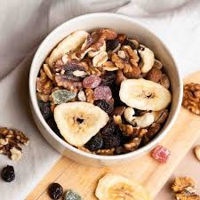

snack crocante
una mezcla horneada de frutos secos y garbanzos especiados. ideal para llevar en un frasco y tener energía entre comidas.
30 minutos
4 porciones
proteico & rápido

ingredientes
- 1 taza de garbanzos cocidos y secos
- 1/2 taza de almendras
- 1/2 taza de nueces
- 1 cucharada de aceite de oliva
- 1 cucharadita de pimentón dulce
- 1/2 cucharadita de comino y sal
paso a paso
- 1. mezclá los garbanzos y frutos secos con el aceite y los condimentos.
- 2. distribuí en una placa y horneá a 180 °c durante 20 minutos, revolviendo a mitad de cocción.
- 3. dejá enfriar por completo para que queden bien crocantes.
- 4. guardá en frascos herméticos y consumí dentro de la semana.